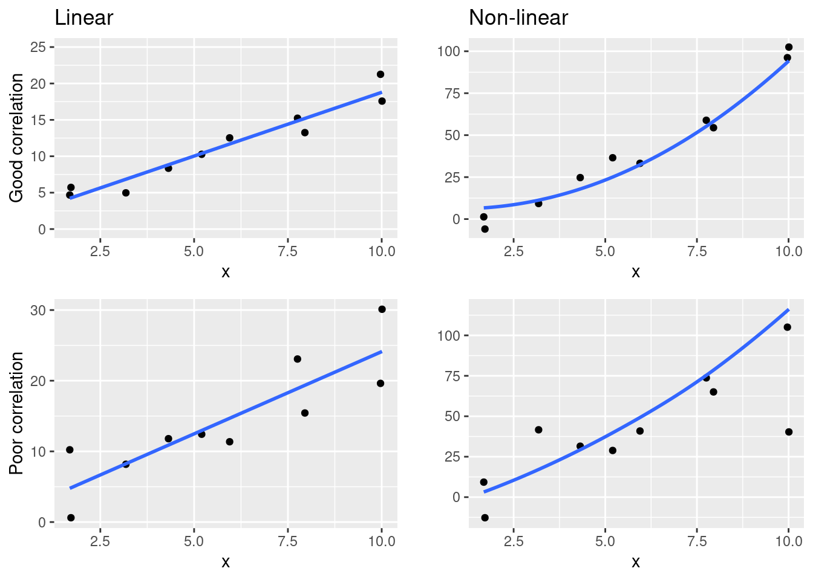
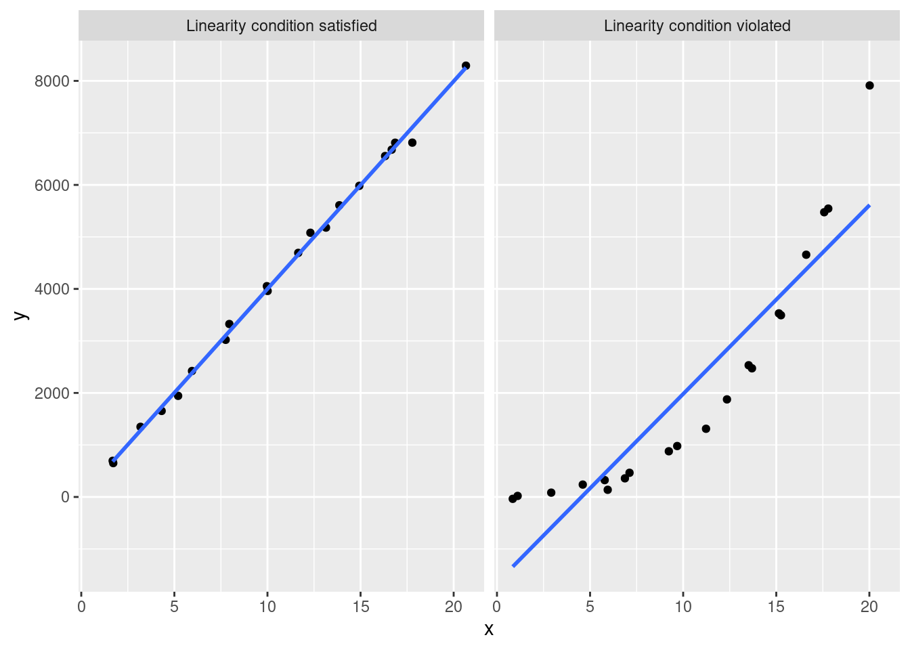

sim_df %>% head()# A tibble: 6 × 2
x y
<dbl> <dbl>
1 1.69 4.68
2 1.72 5.72
3 3.18 4.97
4 4.32 8.35
5 5.20 10.3
6 5.95 12.5 This video will introduce you to the concept of models, and in particular the linear model (which you may already be familiar with as a line of best fit).
Slides: PDF
A common saying when working with models is that “correlation does not imply causation”. What does this mean?
When we create a linear model (e.g. a line of best fit), we have 2 variables:
We are implicitly saying that the values of \(x\) explain the values of \(y\), or alternatively that the \(y\) variable responds to changes in \(x\). This language implies that \(x\) is directly causing \(y\), and not the other way around.
However…
The linear model cannot actually tell us which variable is causing changes in the other (causation). Just because we decide to call one variable \(y\) and the other \(x\), does not mean that is the direction of effect in the real world.
For example, taller people generally weigh more, but there is nothing stopping us from making height the response variable (y), even though most people would say that it makes no sense that your weight causes your height.
In fact, none of the variables in your model could directly cause a change in the other. For example, there might be a third variable (that’s not in your model) that actually causes the change in your model.
Therefore, even if there seems to be a straight line relationship between two variables, we cannot definitively say that once causes the change in the other - only that they are correlated.
Slides: PDF (same as before)
Let’s create your first linear model in R, using a simulated dataset called sim_df.
This is what the first few rows of the dataset look like:
sim_df %>% head()# A tibble: 6 × 2
x y
<dbl> <dbl>
1 1.69 4.68
2 1.72 5.72
3 3.18 4.97
4 4.32 8.35
5 5.20 10.3
6 5.95 12.5 As you can see, there are two variables, \(x\) and \(y\). Here’s what they look like:
sim_df %>%
ggplot() +
geom_point(aes(x,y))
This looks like a pretty good candidate for a linear model, so let’s create one.
We’ll do that with the lm function. The general syntax of this function is:
lm(response ~ explanatory, data = _______)response and explanatory are the column names of those two variables.data parameter expects the dataframe containing those columns.
Fill in the blanks in the lm function with the two variables, y and x, and the dataframe sim_df.
sim_model <- lm(_____ ~ _______, data = _____)# hint text
"Make sure to get the variables in the right order!"sim_model <- lm(y ~ x, data = sim_df)grade_code()Note: Unfortunately the lm function is a part of the core R programming language that predates the tidyverse packages. Unlike the tidyverse functions, the first argument of lm is the formula, not the dataframe. Therefore, you cannot pipe a dataframe to lm, because pipe inserts the dataframe into the first argument position (which will cause an error).
Slides: PDF (same as before)
We usually want to report the slope and intercept of a linear model. The slope is especially useful to report, because it indicates how much \(y\) changes as \(x\) changes.
We can report the model coefficients with the tidy() function from the broom package. The syntax is like this:
your_model %>%
tidy()Replace the blank with the correct function to report the coefficients.
sim_model %>%
_______()sim_model %>%
tidy()# check code
gradethis::grade_code()question(
"What is the slope of the linear model?",
answer("1.27"),
answer("1.75", correct = TRUE),
allow_retry = TRUE
)question(
"What is the intercept of the linear model?",
answer("1.27", correct = TRUE),
answer("1.75"),
allow_retry = TRUE
)So we’ve reported the slope and intercept: however, these don’t tell us about how well the model fits the data, i.e. how close the points are to the model’s line.
For example, you could have a steep slope (suggesting that a change in \(x\) is correlated with a big change in \(y\)), but the points could be scattered a long way from the line (i.e. large residuals). For example, consider these two graphs:
set.seed(42)
x1 <- 1:10 + rnorm(10, 0, 0.5)
x2 <- 1:10 + rnorm(10, 0, 0.5)
x <- c(x1, x2)
y <- c(x1 + rnorm(10, 0, 3), 2*x2 + rnorm(10, 0, 0.5))
series <- c(rep("Low slope, large scatter", 10), rep("Steep slope, low scatter", 10))
tibble(x, y, series) %>%
ggplot(aes(x,y)) +
geom_point() +
geom_smooth(method="lm", se = FALSE) +
facet_wrap(~ series)`geom_smooth()` using formula = 'y ~ x'
We can use a statistic called \(R^2\) (R-squared). You can think of \(R^2\) as the % of the variation in \(y\) that is explained by the explanatory variable, \(x\).
\(R^2\) varies between 0 and 1. 1 means that the model explains all the variation: i.e. the points fall exactly on the line of best fit! As the points get further from the line, \(R^2\) will decrease.
We can report the \(R^2\) by piping a model to the glance() function.
your_model %>%
glance()Fill in the blank with the correct function to report the \(R^2\) value of your model.
sim_model %>%
_______()sim_model %>%
glance()# check code
gradethis::grade_code()You’ll note that glance reports a whole bunch of statistics. We only care about the first column, r.squared, and can ignore the rest.
question(
"What is the R-squared value of your model?",
answer("0.935", correct=TRUE),
answer("0.926"),
answer("1.52"),
answer("114"),
allow_retry = TRUE
)We can use the \(R^2\) to determine how “good” a model is. However, what value of \(R^2\) is “good”?
It turns out that the answer to this question varies widely between different areas of science.
In physics, we often collect data from simple systems where data can be collected very accurately, so physicists expect high \(R^2\) values in their experiments. For example, if you are measuring the speed of an object, there will be only one or two variables that will affect the speed, so you should get a very good correlation. Physical variable are generally easy to predict.
In contrast, the social sciences (e.g. psychology or economics) will accept lower \(R^2\) values, because there social systems are very complex with a huge number of interacting variables. For example, you could measure the effect of a good night’s sleep on students’ exam results the next day, but there are going to ge a lot of other things that affect how well a student does (such as how much they studied). As a result, even if sleep and exam results are related, the correlation will be very weak. Psychologists may be quite happy with \(R^2\) values of less than 0.5 (i.e. 50%).
For the purposes of this class, you can think of an \(R^2\) > 0.5 as good, an \(R^2\) > 0.25 as okay, and an \(R^2\) > 0.1 as weak.
All models make assumptions - that’s how they are able to simplify complexity.
The linear model makes these assumptions:
Linearity: we assume that there is a linear relationship between the response and explanatory variables (i.e. that they fall more or less along a straight line).
Nearly normal residuals: the residuals are normally distributed around the model line.
Constant variation of residuals: the variation in residual size (above and below the model line) is similar in all parts of the model.
Independent observations: Each observation (i.e. each \((x,y)\) point) was generated independently from the others.
These might seem a little complicated, but they all make some intuitive sense when you think about what they mean, so let’s go through them one-by-one.
For a simple regression with one explanatory variable, we can see whether there is a linear relationship by plotting a scatter plot with the model line. For example, compare these two plots:
set.seed(42)
x1 <- 1:20 + rnorm(20, 0, 0.5)
x2 <- 1:20 + rnorm(20, 0, 0.5)
x <- c(x1, x2)
y <- c(400*x1 + rnorm(20, 0, 100), x2^3 + rnorm(20, 0, 100))
series <- c(rep("Linearity condition satisfied", 20), rep("Linearity condition violated", 20))
tibble(x, y, series) %>%
ggplot(aes(x,y)) +
geom_point() +
geom_smooth(method="lm", se = FALSE) +
facet_wrap(~ series)`geom_smooth()` using formula = 'y ~ x'In the left-hand graph the points obviously fall on a straight line (a linear trend). However, in the right-hand side plot, there is an obvious non-linear trend, and that data violates this assumption of the linear model.
The best linear model is the one that has the smallest sum of the squared residuals. We don’t need to worry too much about the mathematics behind this - however, you should be aware that the math does make the simplifying assumption that the residuals have a normal distribution (more or less).
The normal distribution is a bell-shaped distribution:
TODO: add image of normal distribution
We can plot a histogram of the residuals and see if that has a (more or less) normal distribution:
TODO: add image of histogram of normal distribution
To do that, we will need to:
This starter code calculates the residuals using your model and a useful function called add_residuals. The new dataframe (with an additional column called resid to hold the residuals), has been saved in a new variable called sim_model_df.
Use this new sim_model_df dataframe to create histogram of the resid column (fill in the correct geom function and the resid column name in the appropriate blanks).
sim_model_df <- sim_df %>%
add_residuals(sim_model)
sim_model_df %>%
ggplot() +
_______(mapping = aes(x = ________), bins = 5)sim_model_df <- sim_df %>%
add_residuals(sim_model)
sim_model_df %>%
ggplot() +
geom_histogram(mapping = aes(x = resid), bins = 5)# check code
gradethis::grade_code()As you can see, our histogram does not look like a perfectly normal distribution - however, the randomly simulated sim_df dataframe was created with normal residuals!
This is the challenge of working with random data: it will rarely look “perfect”. This is why we say that we only expect nearly normal residuals to satisfy this condition.
In your graph, there does appear to be a roughly normal distribution (of course, it’s easy to say that when we know it should be!):
The residuals of a linear model are arranged above and below the line. As we saw in the previous section, this arrangement should look similar to a normal distribution, i.e.
The linear model also assumes that this normal distribution is the same in all parts of the model (i.e. at both high and low value of \(x\)).
For example, in this model, we can clearly see that the variation in the residuals is not constant - this is a violation of this third assumption of the linear model:
set.seed(46)
x <- 1:100 + rnorm(100)
y <- x + 100:1 * rnorm(100)
ggplot(mapping = aes(x, y)) +
geom_point() +
geom_smooth(method = "lm", se = FALSE) +
labs(title = "Decreasing variation in points")`geom_smooth()` using formula = 'y ~ x'
In the graph above, the points on the right lie much closer to the line: i.e. the residuals will be smaller.
For simple linear models like this (with only a single explanatory variable \(x\)), we can get a reasonable idea of the variability of the residuals just by looking at a scatter plot of the model, as above.
For comparison, here is the model you fit earlier:
sim_df %>%
ggplot(mapping = aes(x, y)) +
geom_point() +
geom_smooth(method = "lm", se = FALSE)`geom_smooth()` using formula = 'y ~ x'
question(
"Does your model (as shown above) satisfy the linear model's assumption of constant variability of residuals?",
answer("Yes, the model satisfies this assumption.", correct = TRUE),
answer("No, the model violates this condition."),
allow_retry = TRUE
)The fourth (and final) assumption of the linear model is that all the observations (data points) were generated independently.
We will not worry to much about this assumption in this course, as the datasets we give you will have independent observations (for the most part).
But what does it mean for observations to be non-independent?
Consider the stock market: we could have a dataset that contains measurements of a company’s stock price at the end of each day. However these observations are not independent. A stock price will rise or fall, but this change will be from the previous observation. I.e. if the stock ends day 1 at 100, it will probably end day 2 pretty close to 100. Therefore, the data points are not independent.
For comparison, think about measuring the height of all the students in this class: one student’s height does not significantly affect an other’s, so these observations are all independent.
What’s going on with
response ~ explanatory? This is what’s know as an R formula.The mathematical forumla for a linear model is \(y=mx+c\). In R, we would write this as
y ~ x: i.e. we replace \(=\) with~, and we only include the actual variables. From this, R infers that we want to estimate the model’s coefficients (the slope, \(m\), and the intercept, \(c\)).